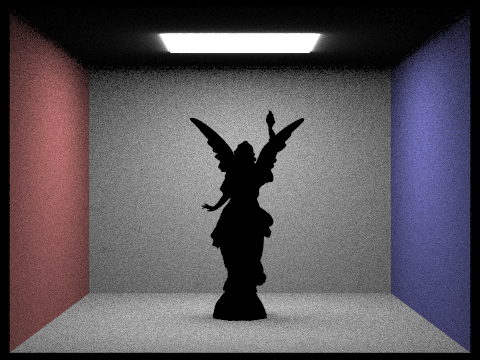

|
|
|
In this homework, I drove right into ray tracing to implement not only ray-intersection calculations, but also a basic path tracer algorithm to bring realism and light to 3D models. As I just stated, it began with simple ray generation and ray-triangle intersectons, but those pieces were the crucial foundations for the later and more complicated algorithms. This includes 2 types of direct illumination, global illumination, and adaptive sampling to help optimize everything.
Overall, while I did find this homework to be much more frustrating compared to the previous ones, it was also the most rewarding as my implementations had very clear outcomes in the form of the rendered images. Additionally, I feel like I have learned the most from this assignment as the ray-tracing portion of the class left me completely confused. But after seeing a lot of the formulas in action, especially after reexplaining them in the write up, I feel a lot more confident in these topics and as I work on the final project.
To start off my ray tracing algorithm, I first needed a way to generate rays. This would allow
the tracking of how the light bounces around their environment, as well as allow rays connecting
from the camera to the pixels on the objects in the scene. To create a ray, the constructor
requires both a Vector3D origin and a normalized Vector3D direction.
Obtaining the origin was straightforward as the Camera object as a member instance
pos which gave the cameras position in world space.
To obtain the normalized direction vector, my implementation took the normalized x and y
coordinates from the image space, along with the camera's hFov and vFov
and used them to interpolate along the sensor plane in camera space.
Using these sensor_x and sensor_y coordinates,
along with the fact that the sensor place is located at z = -1, I could now
obtain the direction vector by finding the difference between the sensor point and
the camera's origin. All that is left was to convert the direction vector to world space
using c2w rotation matrix and then normalize it with the
vector's .unit() method.
With Camera::generate_ray complete, the second step of ray generation was
to implement the algorithm that samples the subpixels with a pixel multiple times,
averaging the amount of radiance via potential rays. Using the gridSampler's
get_sample() method, the normalized subpixel coordinates can be obtained and,
something that I learned, could be directly added to the provided pixel's x and y coordinates.
Initially I thought that I would have to perform more linear interpolation with these subpixels,
but I realized that while it could work, it was overcomplicating everything and I could just implement
things similar to homework 1. With the subpixel samples, their coordinates can be inputted into
generate_ray and their radiance can be found using
PathTracer::est_radiance_global_illumination(Ray r). The radiances are then summed up and
averaged to find the radiance hitting each pixel.
When dealing with intersections, both Ray-Triangle and Ray-Sphere, they both utilized
similar steps. To go into more details, my Ray-Triangle algorithm involves 2 functions:
has_intercect and intercect, both of which do similar things, just
slightly different end result. My has_intercect function utilized the Moller Trumbore
formula to derive the t value at when the intersection happens, along with barycentric
coordinates to help identify where it occurred on the triangle. The has_intercect function
checks if the t is valid by making sure its in between max_t and min_t
set by the ray, as well checking that it actually hit the triangle via the barycentric coords. If
everything checks out, it returns true, else it returns false.
The intercect function operates in a very similar matter. While I initially thought
that I could use the has_intercect function inside of it, this doesn't work as it would
just lead to calculating Moller Trumbore's formula an excessive amount of time as I needed the
intermediate values from it. So similarly, I use the formula to check if an intersection exists.
If it doesn't the function returns false. If it does take the t value as well as the barycentric coordinates
and then input them into the intersection object. The bsdf and primitive attributes are directly
obtained via the get_bsdf() method and the this pointer respectively. The
t value is obtained from the formula and the normal is calculated by interpolating between each
vertexs' normals, utilizing the previously calculated barycentric coordinates. The function then returns
true.
|
|
|

|
|
For my BVH construction algorithm, I first had to implement the *BVHAccel::construct_bvh
method. In all honesty, this section took me an extreme amount of time as I struggled
to figure out how to properly and efficiently set up the BVH tree. Using the starter code,
iterated through all of the primitives and added them to the BVHNodes root,
allowing the future recursively called BVHNodes to include a subset of the primitives.
Afterwards, I checked to see if number of primitives exceeded the max_leaf_size. If
it didn't, the current node/root would become a leaf and could be returned right away after
assigning the start/end pointers to the primitive list. If it did, my implementation then
have to split the current BBox into two, a left and a right BVHNode. My heuristic for
determining where to split revolved around finding the axis with the most spread and
finding the average position along that axis. This was achieved by iterating through the
primitives once again and storing their centroids into a BBox. Taking advantage of the
BBox properties, I was able to use the .extent() method to find
the correct axis to use. The primitives were then sorted into 2 separate vector lists, a left
and right one, based on whether their centroid's position was below or above the average
position. These vector lists then were used to reassign the original pointers and passed
on into 2 recursive calls, giving the left and right nodes their proper primitives lists.
Initially, I didn't reassign any of the pointers, and instead just passed the newly created
vector lists to the children nodes. This resulted in the executable crashing constantly, likely
due to memory mismanagement in creating and using too many new lists.
Moving on, I then defined BBox::intersect.
This method acts as the foundation for my algorithm as it returns a boolean describing
whether or not a ray had intersected with a bounding box. If false, the algorithm can
just ignore all of the primitives present inside of it, whereas if true, then it knows
which BB to further examine. To implement this method, I utilized the axis-aligned
planes method to calculate the tmax and tmin along each axis, ending with the overlapping
t values. If the t values logically made sense (ie. tmax > tmin) and were within the
ray.min_t/ray.max_t, the method would return true, updating min_t/max_t
in the process.
With both the BVH constructed and the BBox intersection method, I could define the
BVHAccel::intersect and BVHAccel::has_intersection.
|
|
|
|
|
|
To compare the effects of BVH acceleration, I recorded the rendering time of a few .dae files with and without it active.
| File | Render Time (With BVH) | Render Time (Without BVH) |
|---|---|---|
| lucy | 0.387 s | 467 s |
| cow | 0.227 s | 12 s |
| max | 0.291 s | 147 s |
Based on the observed rendering time, it is clear that BVH acceleration cuts down the rendering time a considerable amount, ranging from a few seconds in cases where there are only a few thousand primitives (ie. cow) to a few minutes when there are 100,000+ primitives (ie. lucy). This result is expected as BVH allow many ray-intersect calculations to be ignored as if it missing the bounding box of the primitives, no calculation takes place. This also explains why more time was saved proportional to the number of primitives as more primitives would expontially mean more rays without BVH acceleration.
There are two implementations of direct lighting functions that are present within my algorithms: Uniform Hemisphere Sampling and Importance/Light Sampling. While both of them are a form of ray tracing that follows rays to see if they intersect with a light souce, there are some considerable differences in how they function and how they are implemented.
Starting with uniform hemisphere sampling, this form for direct lighting leans
towards the simpler side as it involves checking arbitrary rays in a hemisphere
around a point to figure out the incoming and outgoing radiance from the point.
The nuance comes in from the fact that checking every possible ray within its
hemisphere would require a lot of computation and time, making it uneffective for
direct lighting. This is where Monte Carlos Estimation comes in, as it reduces
the amount of rays necessary through random sampling. To implement this, I first
began by using the hemisphereSampler->get_sample() method within a
for loop to obtain the samples of incoming rays. After converting the rays from
object space to world space, they can be used, along with the position we are focused
on hit_p to create a Ray object. With the ray, we can use the
previously defined BVH intersection function to figure out how many of the samples rays
intersect with a light source. Finally, the reflection equation can be filled in
with the normalized radiance, resulting in the overall light hitting the point.
On the other hand, Importance/Light sampling, while similar, involves a bit more
work to implement. Rather than checking all the rays in a hemisphere or sampling a
selection of them, importance sampling just sends out rays towards nearby light sources.
This drastically reduces the amount of unnecessary rays, but has the downside of requiring
the prior knowledge of all of the nearby lights. I found this implementation to be much more
confusing as even though it is composed of the same parts, the introduction of new
datatypes and functions confused me a lot initially. To start off my implementation,
I first began with a for loop that iterated over the SceneLights, as it
was provided as a vector of pointers. For each light source, I then game them a different
number of samplings: 1 for point lights and ns_area_light for area lights, reducing
the likelihood of resampling the same point multiple times. Then, I utilized the
sample_L light method, obtaining all of the information needed to
fill out the reflection equation. From there, the only differences remaining from the
uniform hemisphere sampling was the required checks to make sure a ray was actual valid.
This included checking to make sure the cos_theta of each ray, simplied as wi_local.z
due to the normals being aligned with the z-axis, isn't negative, which represents a light
hitting behind a surface. The final check was to make sure there was no intersecting point
between the ray and the light, accomplished using bvh->intersect once again.
|
|
|
|

|
|
|
|
|
|
|
|
As the amount of light rays increased, the noise level descreased, representing an inverse relationship between the two. In addition to the soft shadows underneath, the overall noise of the image also was much greater with less rays.
Overall, both uniform hemisphere sampling and lighting sampling are effective at creating a more realistic sense of light. However, it appears that the lighting sampling is much more effective. Even though their shadows are a bit more sharp than what they would appear to be like in real life, the lighting sampling resulted in a lot less noise through the image overall. This is widely due to the fact that their isn't much random sampling involved compared to uniform hemisphere sampling. The sampling causes an extreme amount of noise as even though they still take into account some light rays, it is also countered by some rays going in the opposite directions away from the lights.
My implementation of indirect lighting revolves around the PathTracer::one_bounce_radiance
and recursively calling upon it to simulate the effect of light bouncing off objects and walls. While indirect
lighting seems extremely advanced and complicated, it actually is just built upon the same components of
direct lighting. For instance, my implementation began with PathTracer::at_least_one_bounce_radiance
calling one_bounce_radiance this method returns a Vector3D of the radiance reflecting off of an
intersecton and sets up perfectly for the ray to bounce off of another object, assuming there is
one in the way. This allows for a recursive algorithm where each time a ray bounces off of a wall it,
one_bounce_radiance is called and the outputted radiance is tracked. From there, almost everything is
just the same as a standard direct lighting besides the Russian Roulette Implementation and the
isAccumBounce boolean.
isAccumBounce is the main factor separating global illumination from direct lighting as it dictates whether or not the radiance from each bounce is going to accumulated or ignored. If true, the radiance from each one_bounce_radiance is summed together up until the maximum ray depth is reached, returning that value for the point. This results in a much brighter and more realistic image, given that the maximum ray depth isn't extremely large. If false, the global illumination loses its direct lighting component, and instead just returns the find radiance bounce. This results in a much dimmer image.
Moving on, while the Russian Roulette part of global illumination isn't required, it does help
reduce the biasness that the initial parameters might have brought. Each time after the first bounce
a ray has a chance to be terminated, resulting in no more bounces even prior to reaching maximum
depth. To implement this, I used the coin_flip(double p) with a probability of 0.35
of terminating. Ignoring rays where ray.depth == max_ray_depth, a coin is flipped
with the chance of ending the ray. One interesting element of incorporating the Russian Roultte as
figuring out where to place it in the algorithm. Initially I had it near the end as I believed it
didn't matter where it was, but that resulting in a lot less terminations as the recursive call
happens prior to it. As a result, I placed it near the middle after the ray depth has been incremented
in order to avoid any potential cases of it terminating a ray prior to the first bounce.
|
|
|
|
|
|
While the indirect illumination is much darker due to the lack of walls and objects like could reflect off of, the images does so how with an indirect-only illumination, everything appears to be more uniform in terms of radiance. On the other hand, the direct-only illumination appears to be the opposite, with the shadows being unrealistically straight and well-defined. Overall, less uniform compared to the indirect illumination.
|
|
|
|
|
|
|
|
Based on the rendered views with different max_ray_depth, the biggest difference between them is the overall brightness of the image. As the max ray depth increases, the overall radiance of the image goes up, justifying the increase of brightness. Additionally, another thing to notice is that while the difference between max depth levels were significant at low levels, as the max rose up drastically, the differences became less and less noticable, with 100 being almost no different than max ray depth of 3.
|
|
|
|
|
|
|
|
|
|
|
As the sample rate per pixel went up, the less and less noisy the image became. While the first few images look very rough, as it approaches 1024 samples it comes more uniform and smooth. Additionally, the shadows and shading came more defined with the samples.
As we increase the amount of samples per pixels, the amount of computations required goes up drasitcally to match the number of samples. However, a lot of time and computation can be saved as it is possible for pixels to converge to the correct illuminance prior to reaching the maximum amount of sample through adaptive sampling. This form of sampling involves checking each pixel to see if it has converged or have come close to converging. If so, it ends the sampling early, making the overall sampling process more efficient. This results in high frequency areas still being sampled a lot and low frequency areas being ignored for most of the time.
My implementation achieves adaptive sampling within PathTracer::raytrace_pixel by
keeping track of a lot more information from the pixel sampling process. It keeps track of the number
of samples that have occurred, the illuminance of each sample, and the sum/sum^2 of the total illuminance.
With these values, every 32 samples my implementation the mean and standard deviation of the illuminance
thus far to solve for the pixel's convergence I. If I is below a certain tolerance,
the sampling is terminated as it has converged sufficently enough. The radiance and number of samples
that occurred is then stored into the framebuffer and sample count buffer respectively.

|
|
|
|
|